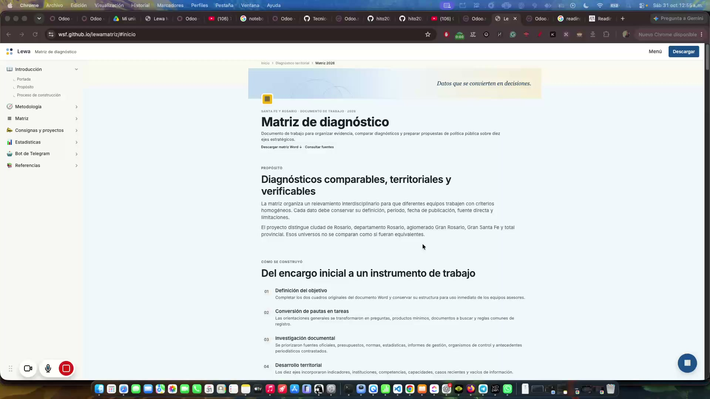

Diagnóstico
Magnitud, evolución, distribución territorial y vacíos.
Diagnóstico y propuestas · Santa Fe y Rosario · 2026
Portal de trabajo del equipo y de los especialistas de la matriz.
Ingresá la clave para continuar.
Clave incorrecta.
Acceso restringido · documento de trabajo en construcción
Documento de trabajo para organizar evidencia, comparar diagnósticos y preparar propuestas de política pública sobre diez ejes estratégicos.

Propósito
La matriz organiza un relevamiento interdisciplinario para que diferentes equipos trabajen con criterios homogéneos. Cada dato debe conservar su definición, período, fecha de publicación, fuente directa y limitaciones.
El proyecto distingue ciudad de Rosario, departamento Rosario, aglomerado Gran Rosario, Gran Santa Fe y total provincial. Esos universos no se comparan como si fueran equivalentes.
Cómo se construyó
Completar los dos cuadros originales del documento Word y conservar su estructura para uso inmediato de los equipos asesores.
Las orientaciones generales se transformaron en preguntas, productos mínimos, documentos a buscar y reglas comunes de registro.
Se priorizaron fuentes oficiales, presupuestos, normas, estadísticas, informes de gestión, organismos de control y antecedentes periodísticos contrastados.
Los diez ejes incorporaron indicadores, instituciones, competencias, capacidades, casos recientes y vacíos de información.
Se revisaron comparabilidad territorial, vigencia, enlaces, trazabilidad, coherencia interna y legibilidad del archivo final.
Este sitio publica la metodología y el recorrido para facilitar revisión, comparación y futuras actualizaciones.
Método común
Todos los equipos siguen el mismo recorrido y producen resultados mínimos comparables.
Magnitud, evolución, distribución territorial y vacíos.
Derechos, obligaciones, competencias y reglamentación.
Responsables, recursos, capacidades y coordinación.
Cobertura, presupuesto, ejecución, metas y evaluación.
Hechos relevantes, respuesta pública y estado actual.
Preocupaciones, satisfacción y contraste con registros.
Intereses, posiciones, recursos y capacidad de incidencia.
Nudos críticos, prioridades, riesgos y evidencia faltante.
Alcance temático
Producto final
Explorá los diez ejes, filtrá contenidos y ampliá la matriz para trabajarla en toda la pantalla.
| Eje | Indicadores mínimos | Instituciones a mapear | Temas y casos |
|---|
No se encontraron resultados para esta búsqueda.
Tablero del proyecto
Quién participa, qué productos se van obteniendo y cómo evoluciona el documento. Los contadores se calculan en vivo sobre el banco de consignas y proyectos; el registro de actividad lo mantiene el bot en cada publicación.
Nube de conceptos
Conceptos más presentes en lemas, consignas, significantes, frases y proyectos del banco (el tamaño refleja su peso relativo).
Actividad y actualizaciones
Metodología: sitio estático — los contadores de productos se calculan al abrir la página desde los datos del banco; colaboradores y registro de actualizaciones son mantenidos por el bot en cada publicación. Las "actualizaciones publicadas" registran entregas del proyecto, no mensajes privados de los chats.
Explorador conceptual
Red interactiva de los ejes, conceptos y productos de la matriz. Arrastrá los nodos, pasá el cursor para ver detalles y cliqueá un tema para aislar sus conexiones.
Eje temático · Concepto · Producto del proyecto · Territorio
Reglas de evidencia
Las cifras, normas, autoridades, presupuestos y casos llevan una fuente identificable y un enlace directo cuando está disponible.
Cuando no hay información pública verificable, el vacío se explicita. No se completa con estimaciones sin respaldo.
La matriz separa datos comprobados, declaraciones, interpretaciones y cuestiones que todavía deben validarse.
Participá por Telegram
El bot Lewa Matriz (@lewa_2027_matriz_bot) ayuda a los especialistas de cada área a completar el formato de información de cada tema de la matriz: los ocho bloques comunes aplicados a cada eje.
Cómo entrar
Entrá a t.me/lewa_2027_matriz_bot desde Telegram (celular o escritorio).
El acceso al bot es con usuario autorizado, y para pedir el alta necesitás tu ID numérico de Telegram. Cómo obtenerlo: abrí t.me/userinfobot, tocá Iniciar (o enviá /start) y te va a responder con tu Id: un número como 123456789. Ese es tu ID.
Enviá ese número a Matías, el coordinador del proyecto, por Telegram (o por el medio habitual del equipo). Él centraliza los pedidos de alta y autoriza tu usuario.
Cuando estés autorizado, volvé al bot y enviá /start. Presentate: contá en qué eje o tema sos especialista y en qué bloque querés trabajar (ej. “Salud, marco normativo”). El bot usa el mismo método de ocho bloques de esta página.
Casos de uso frecuentes
“Eje Salud — la tasa de mortalidad infantil del departamento Rosario fue X‰ en 2024, fuente: [enlace]”. El bot lo integra al bloque correspondiente, verifica la fuente y avisa qué falta (período, unidad, territorio).
“Buscá datos oficiales de los últimos 5 años sobre empleo industrial en el Gran Rosario”. El bot releva fuentes primarias y oficiales y devuelve cifras con enlace, período y limitaciones.
“Ayudame a armar el mapa de actores del eje Seguridad”. El bot propone una estructura, hace preguntas y completa el bloque con lo que aportes y lo que encuentre.
“¿Conviene separar movilidad de infraestructura en este eje?”. El bot argumenta, propone alternativas y ayuda a replanificar el trabajo del tema.
“¿cómo va quedando mi aporte?”. El bot muestra el consolidado publicado en este sitio y señala qué bloques siguen vacíos.
El coordinador puede dar al bot indicaciones de reorganización de la matriz y de comportamiento, para hacerlo más funcional al objetivo del proyecto.
Ciclo de trabajo por eje
Cuando un especialista pide investigación o propuestas para su eje, el bot recorre con él un ciclo estándar validado, completo desde el chat de Telegram:
El bot consulta el enfoque del especialista, si quiere incluir un estudio comparado internacional (es opcional), qué casos locales le interesan y qué formato de salida espera.
Se trabaja sobre el diagnóstico del eje con los ocho bloques del método y se identifican sus nudos críticos; toda propuesta se ancla a ellos.
El bot investiga en fuentes oficiales y primarias: cada dato lleva URL y fecha de acceso, se verifica su vigencia y lo que no se puede verificar se declara expresamente.
Un único documento con tabla comparada, hallazgos con fuentes, medidas adoptables por Santa Fe (problema, nivel competente, costo, plazo, indicador público y riesgos) y su aplicación a los casos locales.
Antes de publicar, el bot envía el resumen ejecutivo y la lista de medidas. La publicación solo ocurre con el OK explícito del especialista; si hay cambios pedidos, se itera.
El informe se publica en este sitio y se le avisa al especialista con la ruta exacta para verlo, las aclaraciones de lo no verificado y el próximo paso sugerido.
Valor, período, territorio, unidad de medida y fuente con enlace directo. Si faltan campos, el bot los pide antes de incorporar el dato.
El bot clasifica cada aporte y no mezcla datos comprobados con interpretaciones ni con lemas de campaña.
Cuando hay material suficiente e importante, se registra en esta página y se le avisa a quien hizo el aporte.
Fuentes prioritarias
El relevamiento se apoya primero en organismos oficiales y documentos primarios.
Próxima etapa
La primera fase ordena evidencia y responsabilidades. La segunda podrá formular proyectos de corto, mediano y largo plazo, con metas, responsables, costos e indicadores.
Matriz base completada · versión del 23 de octubre de 2026